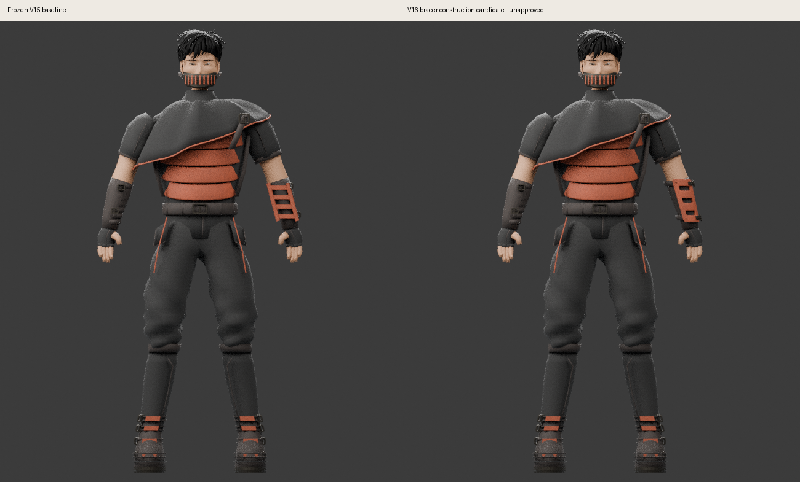

Original reference 090

Scoped construction improvement — unapproved, no production promotion
Original reference 090 is unchanged. Eight paired CPU renders compare frozen V15 (left) and V16 (right) with matching camera/pose settings. The source illustration is not a calibrated scan. This does not certify whole-character art, fit, gameplay or GPU equivalence.
Scope and open defects · View manifest · Independent pixel review

Continuous ceramic plate and recessed apertures improve on the open ladder. Broad proud retention bands, simplified latch proportions and uniform pitting remain. New bracer geometry passes scoped checks; inherited character zero-area/UV defects remain open. Read the full evidence before interpreting a validator pass.